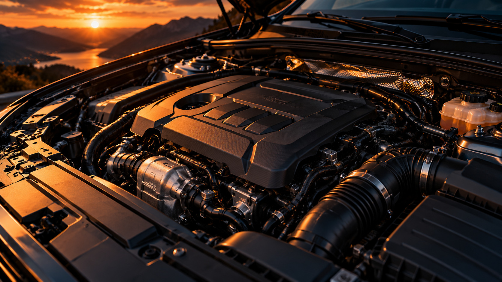

КАК ЭТО РАБОТАЕТ
Двигатель
Двигатель превращает энергию топлива в механическую работу и приводит автомобиль в движение.
Основные элементы
- Блок цилиндров
- Поршни
- Коленчатый вал
- Клапанный механизм

Двигатель превращает энергию топлива в механическую работу и приводит автомобиль в движение.
Использует бензин и искровое зажигание топливовоздушной смеси.
Топливо воспламеняется от высокой температуры сжатого воздуха.
Объединяет двигатель внутреннего сгорания и электромотор.
Передвигается за счёт энергии аккумулятора и электродвигателя.